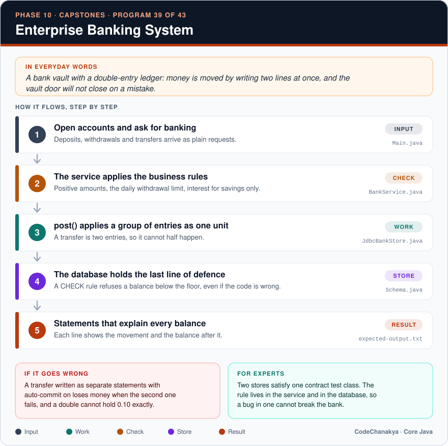

Phase 10 · Capstones · Program 39 of 43
Enterprise Banking System
The problem
A bank makes three promises. Money is never lost or invented, so a transfer either happens completely or not at all. No account goes below its floor, so a savings account keeps its minimum and a current account stops at its overdraft limit. And the history always explains the balance.
This capstone puts together what Phases 3 to 9 taught: records and enums, collections, exceptions, BigDecimal, JDBC transactions, interfaces and tests. Accounts live in an in-memory Derby database, and a second, in-memory store runs the same contract tests.
See the flow
The whole program as one picture. Read it top to bottom; the colour of each card says what kind of step it is.


If you are new to coding
A bank vault with a double-entry ledger: money is moved by writing two lines at once, and the vault door will not close on a mistake.
If you are learning
Follow the numbered cards from top to bottom. Open the file named on each card, run the program, and match its output to the last card.
If you are experienced
Two stores satisfy one contract test class. The rule lives in the service and in the database, so a bug in one cannot break the bank.
Text version of the flow
- Open accounts and ask for banking (input): Deposits, withdrawals and transfers arrive as plain requests.
- The service applies the business rules (check): Positive amounts, the daily withdrawal limit, interest for savings only.
- post() applies a group of entries as one unit (work): A transfer is two entries, so it cannot half happen.
- The database holds the last line of defence (store): A CHECK rule refuses a balance below the floor, even if the code is wrong.
- Statements that explain every balance (result): Each line shows the movement and the balance after it.
Read in this order
- 1BankStore.javaThe interface. post() applies a group of entries as one unit.
- 2JdbcBankStore.javaOne transaction per post, and a balance change written as balance = balance + ?.
- 3BankService.javaThe rules: positive amounts, the daily limit, interest.
- 4Schema.javaThe tables and the CHECK rule that holds the floor.
- 5BankStoreContract.javaThe tests every store must pass.
- 6Main.javaThe demonstration, with refusals on purpose.
The code
package com.codechanakya.bank; import java.math.BigDecimal; import java.sql.Connection; import java.sql.Date; import java.sql.PreparedStatement; import java.sql.ResultSet; import java.sql.SQLException; import java.sql.Statement; import java.time.LocalDate; import java.util.ArrayList; import java.util.List; import java.util.Optional; /** * The database version of {@link BankStore}. * * <p>{@link #post} runs inside one transaction. Each entry changes the balance with * {@code UPDATE ... SET balance = balance + ?}, so two customers can never overwrite each other's * change, and the table's CHECK rule refuses a balance below the floor (SQLState 23513). */ public class JdbcBankStore implements BankStore { private static final String ACCOUNT_COLUMNS = "id, customer, type, balance"; private final ConnectionProvider provider; public JdbcBankStore(ConnectionProvider provider) { this.provider = provider; } @Override public Account open(String customer, AccountType type, BigDecimal opening, LocalDate date) { try (Connection connection = provider.open()) { connection.setAutoCommit(false); try { int id; try (PreparedStatement statement = connection.prepareStatement( "INSERT INTO account (customer, type, balance, floor) VALUES (?, ?, ?, ?)", Statement.RETURN_GENERATED_KEYS)) { statement.setString(1, customer); statement.setString(2, type.name()); statement.setBigDecimal(3, opening); statement.setBigDecimal(4, type.floor()); statement.executeUpdate(); try (ResultSet keys = statement.getGeneratedKeys()) { keys.next(); id = keys.getInt(1); } } Account account = new Account(id, customer, type, opening); insertLedger(connection, id, TransactionKind.OPENING, account.balance(), account.balance(), "Account opened", date); connection.commit(); return account; } catch (SQLException e) { connection.rollback(); throw translate("Opening an account", e, 0); } } catch (SQLException e) { throw translate("Opening an account", e, 0); } } @Override public Optional<Account> find(int id) { return queryAccounts("SELECT " + ACCOUNT_COLUMNS + " FROM account WHERE id = ?", id).stream().findFirst(); } @Override public List<Account> findAll() { return queryAccounts("SELECT " + ACCOUNT_COLUMNS + " FROM account ORDER BY id"); } @Override public void post(LocalDate date, List<Entry> entries) { try (Connection connection = provider.open()) { connection.setAutoCommit(false); int current = 0; try { for (Entry entry : entries) { current = entry.accountId(); try (PreparedStatement statement = connection.prepareStatement( "UPDATE account SET balance = balance + ? WHERE id = ?")) { statement.setBigDecimal(1, entry.amount()); statement.setInt(2, entry.accountId()); if (statement.executeUpdate() == 0) { throw new AccountNotFoundException(entry.accountId()); } } BigDecimal after = balanceOf(connection, entry.accountId()); insertLedger(connection, entry.accountId(), entry.kind(), entry.amount(), after, entry.note(), date); } connection.commit(); } catch (SQLException | RuntimeException e) { connection.rollback(); if (e instanceof SQLException sql) { throw translate("Posting entries", sql, current); } throw (RuntimeException) e; } } catch (SQLException e) { throw translate("Posting entries", e, 0); } } @Override public List<Transaction> history(int accountId) { String sql = "SELECT id, account_id, kind, amount, balance_after, note, on_date FROM ledger WHERE account_id = ? ORDER BY id"; try (Connection connection = provider.open(); PreparedStatement statement = connection.prepareStatement(sql)) { statement.setInt(1, accountId); try (ResultSet rows = statement.executeQuery()) { List<Transaction> list = new ArrayList<>(); while (rows.next()) { list.add(new Transaction(rows.getInt(1), rows.getInt(2), TransactionKind.valueOf(rows.getString(3)), rows.getBigDecimal(4), rows.getBigDecimal(5), rows.getString(6), rows.getDate(7).toLocalDate())); } return list; } } catch (SQLException e) { throw translate("Reading history", e, accountId); } } @Override public BigDecimal withdrawnOn(int accountId, LocalDate date) { String sql = "SELECT COALESCE(SUM(-amount), 0) FROM ledger WHERE account_id = ? AND on_date = ? AND kind = 'WITHDRAWAL'"; try (Connection connection = provider.open(); PreparedStatement statement = connection.prepareStatement(sql)) { statement.setInt(1, accountId); statement.setDate(2, Date.valueOf(date)); try (ResultSet rows = statement.executeQuery()) { rows.next(); return rows.getBigDecimal(1).setScale(2); } } catch (SQLException e) { throw translate("Summing withdrawals", e, accountId); } } private BigDecimal balanceOf(Connection connection, int id) throws SQLException { try (PreparedStatement statement = connection.prepareStatement("SELECT balance FROM account WHERE id = ?")) { statement.setInt(1, id); try (ResultSet rows = statement.executeQuery()) { rows.next(); return rows.getBigDecimal(1); } } } private void insertLedger(Connection connection, int accountId, TransactionKind kind, BigDecimal amount, BigDecimal after, String note, LocalDate date) throws SQLException { String sql = "INSERT INTO ledger (account_id, kind, amount, balance_after, note, on_date) VALUES (?, ?, ?, ?, ?, ?)"; try (PreparedStatement statement = connection.prepareStatement(sql)) { statement.setInt(1, accountId); statement.setString(2, kind.name()); statement.setBigDecimal(3, amount); statement.setBigDecimal(4, after); statement.setString(5, note); statement.setDate(6, Date.valueOf(date)); statement.executeUpdate(); } } private List<Account> queryAccounts(String sql, Object... parameters) { try (Connection connection = provider.open(); PreparedStatement statement = connection.prepareStatement(sql)) { for (int i = 0; i < parameters.length; i++) { statement.setObject(i + 1, parameters[i]); } try (ResultSet rows = statement.executeQuery()) { List<Account> list = new ArrayList<>(); while (rows.next()) { list.add(new Account(rows.getInt(1), rows.getString(2), AccountType.valueOf(rows.getString(3)), rows.getBigDecimal(4))); } return list; } } catch (SQLException e) { throw translate("Querying accounts", e, 0); } } /** SQLState 23513 is a broken CHECK rule: the balance would go below its floor. */ private static BankException translate(String action, SQLException e, int accountId) { if ("23513".equals(e.getSQLState())) { return new InsufficientFundsException(accountId); } return new BankException(action + " failed (SQLState " + e.getSQLState() + "): " + e.getMessage(), e); } }
package com.codechanakya.bank; import static org.junit.jupiter.api.Assertions.assertAll; import static org.junit.jupiter.api.Assertions.assertEquals; import static org.junit.jupiter.api.Assertions.assertThrows; import static org.junit.jupiter.api.Assertions.assertTrue; import java.math.BigDecimal; import java.time.LocalDate; import java.util.List; import org.junit.jupiter.api.DisplayName; import org.junit.jupiter.api.Test; /** * The rules every BankStore must obey. The in-memory and the JDBC store each run this same class, * so the two can never quietly disagree. */ abstract class BankStoreContract { static final LocalDate DAY = LocalDate.of(2025, 6, 30); abstract BankStore store(); static BigDecimal money(String text) { return new BigDecimal(text).setScale(2); } @Test @DisplayName("opening an account records the opening balance in the history") void openRecordsHistory() { Account a = store().open("Asha", AccountType.SAVINGS, money("1000"), DAY); List<Transaction> history = store().history(a.id()); assertAll( () -> assertEquals(1, history.size()), () -> assertEquals(TransactionKind.OPENING, history.get(0).kind()), () -> assertEquals(money("1000"), history.get(0).balanceAfter())); } @Test @DisplayName("ids are handed out in order and findAll is ordered by id") void idsAreOrdered() { Account a = store().open("A", AccountType.CURRENT, money("10"), DAY); Account b = store().open("B", AccountType.CURRENT, money("20"), DAY); assertEquals(List.of(a.id(), b.id()), store().findAll().stream().map(Account::id).toList()); assertTrue(b.id() > a.id()); } @Test @DisplayName("find returns empty for an unknown id") void findUnknown() { assertTrue(store().find(999).isEmpty()); } @Test @DisplayName("a savings account cannot be opened below its floor") void openBelowFloor() { assertThrows(InsufficientFundsException.class, () -> store().open("A", AccountType.SAVINGS, money("100"), DAY)); } @Test @DisplayName("post changes the balance and adds a history line with the new balance") void postChangesBalance() { Account a = store().open("A", AccountType.CURRENT, money("100"), DAY); store().post(DAY, List.of(new Entry(a.id(), TransactionKind.DEPOSIT, money("50"), "Deposit"))); assertEquals(money("150"), store().find(a.id()).orElseThrow().balance()); assertEquals(money("150"), store().history(a.id()).get(1).balanceAfter()); } @Test @DisplayName("a current account may go into overdraft, but not past its limit") void overdraft() { Account a = store().open("A", AccountType.CURRENT, money("100"), DAY); store().post(DAY, List.of(new Entry(a.id(), TransactionKind.WITHDRAWAL, money("-10100"), "x"))); assertEquals(money("-10000"), store().find(a.id()).orElseThrow().balance()); assertThrows(InsufficientFundsException.class, () -> store().post(DAY, List.of(new Entry(a.id(), TransactionKind.WITHDRAWAL, money("-0.01"), "x")))); } @Test @DisplayName("a savings account cannot go below its minimum balance") void savingsFloor() { Account a = store().open("A", AccountType.SAVINGS, money("600"), DAY); assertThrows(InsufficientFundsException.class, () -> store().post(DAY, List.of(new Entry(a.id(), TransactionKind.WITHDRAWAL, money("-100.01"), "x")))); assertEquals(money("600"), store().find(a.id()).orElseThrow().balance()); } @Test @DisplayName("posting to an unknown account is refused") void unknownAccount() { assertThrows(AccountNotFoundException.class, () -> store().post(DAY, List.of(new Entry(42, TransactionKind.DEPOSIT, money("1"), "x")))); } @Test @DisplayName("when the second entry fails, the first is undone too (all or nothing)") void allOrNothing() { Account a = store().open("A", AccountType.CURRENT, money("500"), DAY); assertThrows(AccountNotFoundException.class, () -> store().post(DAY, List.of( new Entry(a.id(), TransactionKind.TRANSFER_OUT, money("-200"), "out"), new Entry(77, TransactionKind.TRANSFER_IN, money("200"), "in")))); assertAll( () -> assertEquals(money("500"), store().find(a.id()).orElseThrow().balance()), () -> assertEquals(1, store().history(a.id()).size())); } @Test @DisplayName("a transfer that overdraws the sender leaves the receiver untouched") void transferOverdrawLeavesReceiver() { Account savings = store().open("S", AccountType.SAVINGS, money("600"), DAY); Account other = store().open("O", AccountType.CURRENT, money("0"), DAY); assertThrows(InsufficientFundsException.class, () -> store().post(DAY, List.of( new Entry(savings.id(), TransactionKind.TRANSFER_OUT, money("-500"), "out"), new Entry(other.id(), TransactionKind.TRANSFER_IN, money("500"), "in")))); assertEquals(money("0"), store().find(other.id()).orElseThrow().balance()); } @Test @DisplayName("withdrawnOn sums only withdrawals, only that day, as a positive number") void withdrawnOn() { Account a = store().open("A", AccountType.CURRENT, money("1000"), DAY); store().post(DAY, List.of(new Entry(a.id(), TransactionKind.WITHDRAWAL, money("-100"), "w"))); store().post(DAY, List.of(new Entry(a.id(), TransactionKind.WITHDRAWAL, money("-50.50"), "w"))); store().post(DAY, List.of(new Entry(a.id(), TransactionKind.DEPOSIT, money("999"), "d"))); store().post(DAY.plusDays(1), List.of(new Entry(a.id(), TransactionKind.WITHDRAWAL, money("-7"), "w"))); assertEquals(money("150.50"), store().withdrawnOn(a.id(), DAY)); assertEquals(money("0"), store().withdrawnOn(a.id(), DAY.minusDays(1))); } }
Only the key files are shown. The rest are in the repository.
Run it
$ ./run.sh --check
== Opening accounts
1 Asha Rao SAVINGS 12000.00
2 Bilal Khan CURRENT 3000.00
3 Chitra Nair SAVINGS 75000.00
== Everyday banking
Deposit 2500.50 to Asha: done
Withdraw 4000 from Bilal: done
Withdraw 9000 more from Bilal (overdraft): done
Withdraw 5000 more from Bilal (past the overdraft): refused, Account 2 would go below its lowest allowed balance
Withdraw 14100 from Asha (below the minimum): refused, Account 1 would go below its lowest allowed balance
Withdraw 40000 from Chitra: done
Withdraw 20000 more from Chitra (daily limit): refused, Daily withdrawal limit of 50000.00 exceeded (already withdrawn 40000.00)
Deposit -5 to Asha: refused, The amount must be positive, but was -5
Deposit to account 99: refused, No account with id 99
Open a savings account with 100: refused, A SAVINGS account needs at least 500.00 to open, but 100.00 was given
== Transfers
Transfer 5000 from Chitra to Bilal: done
Transfer 50000 from Asha to Bilal (Asha is too poor): refused, Account 1 would go below its lowest allowed balance
Transfer 100 from Chitra to account 99: refused, No account with id 99
Transfer 100 from Asha to Asha: refused, Cannot transfer to the same account
Total deposits in the bank: 39500.50
== Month end
Interest paid to 2 savings accounts
1 Asha Rao SAVINGS 14548.84
2 Bilal Khan CURRENT -5000.00
3 Chitra Nair SAVINGS 30100.00
== Statement
Statement for account 2 (Bilal Khan, CURRENT)
2025-06-30 OPENING 3000.00 balance 3000.00 Account opened
2025-06-30 WITHDRAWAL -4000.00 balance -1000.00 Withdrawal
2025-06-30 WITHDRAWAL -9000.00 balance -10000.00 Withdrawal
2025-06-30 TRANSFER_IN 5000.00 balance -5000.00 Transfer from 3
Closing balance: -5000.00
Statement for account 1 (Asha Rao, SAVINGS)
2025-06-30 OPENING 12000.00 balance 12000.00 Account opened
2025-06-30 DEPOSIT 2500.50 balance 14500.50 Deposit
2025-06-30 INTEREST 48.34 balance 14548.84 Monthly interest
Closing balance: 14548.84
OK: output matches expected-output.txt
This is the real output from OpenJDK 21.0.13 on Linux, with the real Apache Derby 10.16.1.1 jars. The run is the same every time because the clock is fixed and the database lives in memory. The project's GitHub Actions run is the check on Java 21 and 25 with real Maven and the real JUnit jar. It has not yet been run on Windows or macOS. Run ./run.sh --test for the JUnit tests.
Try it yourself
- BeginnerGive savings and current accounts different daily limits.
- IntermediateCharge a monthly fee to small current accounts.
- IntermediatePrint a statement between two dates.
- IntermediateClose an account, only when its balance is zero.
- ChallengeWrite a third store and make the contract pass on it.
- ChallengeRemove the CHECK rule and see which tests notice.
Hints and solutions are in the exercises and solutions folders. Try first.
Break it on purpose
Three files: a transfer with auto-commit left on, money held in a double, and SQL built by gluing text together. The README in the broken folder explains each one.